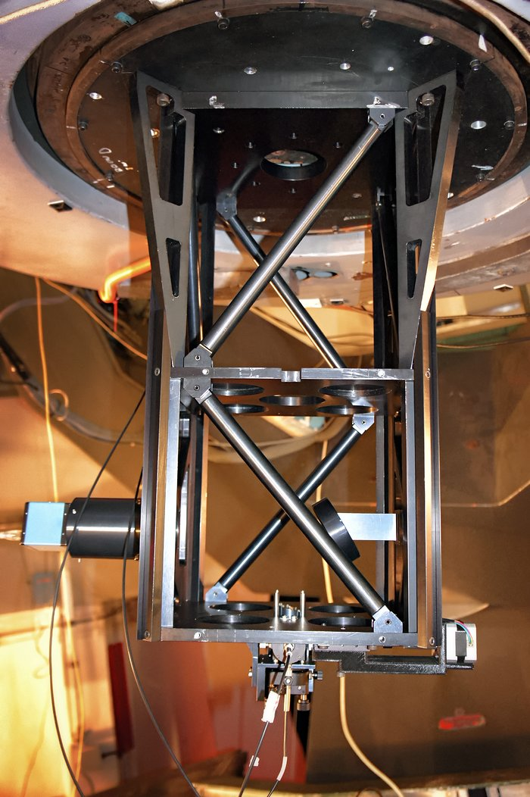

Análisis de posibles compañeras en estrellas químicamente peculiares a partir de las variaciones de la velocidad radial
Abstract
Reportamos la identificación de ocho objetos con variabilidad en velocidad radial y peculiaridades químicas, cuya variabilidad excede la incertidumbre instrumental del espectrógrafo FIDEOS. Estudios previos han explorado la posibilidad de que el enriquecimiento químico observado en algunas estrellas peculiares en el campo estelar pueda deberse a una transferencia de masa en el pasado. En este trabajo, utilizamos datos de velocidad radial obtenidos con el espectrógrafo de fibra óptica de doble échelle (FIDEOS) en el telescopio ESO-1m, ubicado en el Observatorio de La Silla, Chile. Las observaciones fueron registradas por la Universidad Católica del Norte (UCN) durante el año 2022, con una resolución espectral de \( R \sim 43000 \). Los datos fueron procesados utilizando la tubería de reducción CERES para obtener curvas de velocidad radial, las cuales fueron posteriormente analizadas con The Joker, un muestreador basado en Monte Carlo optimizado para problemas de dos cuerpos. Encontramos que la estrella TYC 4686-2039-1 podría albergar una enana blanca como compañera, con una masa de \( 0.5174_{-0.0024}^{+0.0021} ~M_\odot \). Además, identificamos cinco objetos con compañeros subestelares en el rango de enanas rojas y marrones (\( 0.016_{-0.003}^{+0.005} \) a \( 0.12_{-0.03}^{+0.12} ~M_\odot \)). Finalmente, dos sistemas sugieren la presencia de compañeros de masa planetaria con masas similares a Júpiter de \( 0.0078_{-0.0009}^{+0.0034} ~M_\odot \) y \( 0.00197_{-0.00005}^{+0.00014} ~M_\odot \). Estos resultados sugieren que el enriquecimiento químico característico de estas estrellas peculiares podría estar vinculado a una diversa gama de compañeros binarios, que incluyen objetos estelares, subestelares y planetarios.
Palabras Clave: estrellas: químicamente peculiares / estrellas: evolución / binarias: general / binarias: compañeras subestelares / binarias: compañeras planetarias / técnicas: espectroscópicas / técnicas: velocidad radial
 Tesis
Tesis

Instrumentos
Los espectros utilizados en este estudio fueron obtenidos con el espectrógrafo FIDEOS, que opera a una resolución de \( R \sim 43000 \) en el rango espectral visible. Este instrumento está montado en el telescopio ESO-1m en el Observatorio de La Silla en Chile (LSOM), operado por la ESO (ESO). Los datos fueron adquiridos entre el 28 de enero de 2022 y el 22 de diciembre de 2022. Se obtuvieron un total de 101 espectros de alta resolución para las estrellas analizadas en este trabajo. FIDEOS está estabilizado térmicamente y montado sobre soportes antivibración para garantizar alta estabilidad en las mediciones. La estabilidad en la velocidad radial (RV) es ligeramente inferior a \(30\) km/h en múltiples noches consecutivas de observación (Vanzi et al. 2018).
Además, Vanzi et al. (2018) demuestran que el instrumento puede alcanzar una magnitud límite de \( V=11 \) con una relación señal-ruido (S/N) de 10 en un tiempo de exposición de 30 minutos, logrando una precisión en RV de aproximadamente \( \sim 8\, \text{m s}^{-1} \) en el cielo. El instrumento cubre un rango de longitud de onda desde \( 4200 \) hasta \( 8000 \) Å en el espectro visible, con una resolución espacial de 19 segundos de arco.
Para la reducción, extracción, análisis y calibración de los espectros adquiridos con el instrumento FIDEOS, se implementó una Colección de Rutinas Elementales para Espectros Échelle, conocida por su acrónimo en inglés CERES. El objetivo principal de estas rutinas es desarrollar procesos completamente automatizados capaces de generar espectros extraídos y homogeneizados de manera óptima (Brahm et al. 2017).
En este trabajo, la relación señal-ruido (S/N) de los espectros generalmente varió entre \(14\)
y \(114\), con un promedio de \(33\). Estos valores
corresponden principalmente a estrellas de tipo G, para las cuales se usaron tiempos de
exposición de \(1800\) s en la mayoría de los objetivos
(ver tabla).
Estos parámetros de observación fueron seleccionados para lograr un buen equilibrio entre la
calidad de la señal y el tiempo total de observación,
asegurando una cobertura adecuada de las características espectroscópicas de las estrellas, en
particular las variaciones en RV, que son cruciales
para analizar la presencia de compañeros estelares o subestelares.
| Nombre | ID | T. Esp | V | T. Exp [s] | N° de Obs | R. S/N |
|---|---|---|---|---|---|---|
| Krich-1 | TYC22-591-1 | ... | 10.950 | 1800 | 3 | 17 |
| Krich-2 | TYC26-777-1 | G5 | 9.760 | 1800 | 4 | 27-44 |
| Na-rich | TYC6908-1643-1 | ... | 10.400 | 1800 | 4 | 31-54 |
| Nrich-1 | TYC4686-2039-1 | ... | 11.204 | 1800 | 4 | 14-27 |
| Nrich-2 | TYC8517-1671-1 | ... | 10.701 | 1800 | 5 | 24-34 |
| Nrich-3 | TYC244-273-1 | ... | 10.650 | 1800 | 6 | 19-39 |
| Nrich-4 | TYC250-1352-1 | ... | 11.410 | 1800 | 3 | 17-29 |
| Nrich-5 | TYC269-474-1 | ... | 10.730 | 1800 | 6 | 20-36 |
| Nrich-6 | TYC7408-694-1 | ... | 11.040 | 1800 | 3 | 31-39 |
| Nrich-7 | TYC5256-183-1 | ... | 10.689 | 1800 | 8 | 22-29 |
| Nrich-8 | TYC8525-512-1 | ... | 11.400 | 1800 | 3 | 15-24 |
| Si-rich | TYC5805-233-1 | ... | 10.620 | 1800 | 19 | 24-48 |
| s-rich | TYC6524-876-1 | G(II)wp(Ba) | 8.400 | 1400 | 8 | 63-114 |